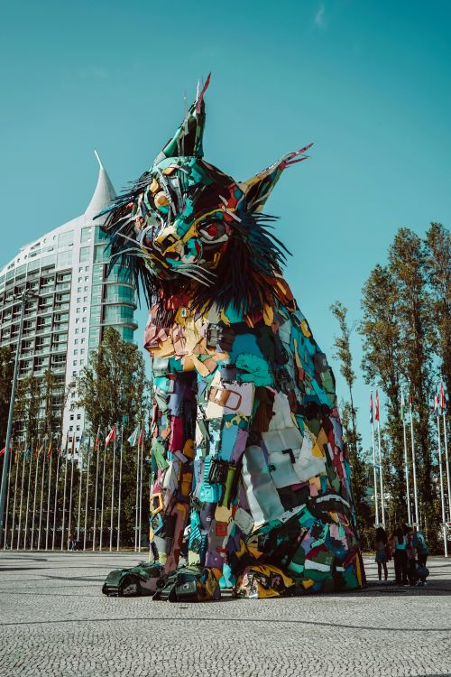
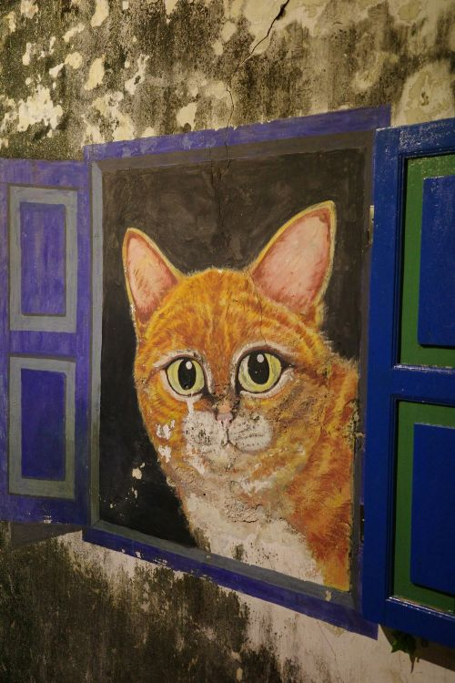

Copilot Search Branding Like Dislike Cats have been a significant subject in art throughout history, symbolizing mystery, independence, and domesticity across various cultures and artistic movements. Ancient Civilizations Cats have been depicted in art since ancient times, particularly in Egyptian culture, where they were revered as sacred animals. They were associated with the goddess Bastet, who represented home, fertility, and protection. Egyptian art often featured cats in murals, sculptures, and hieroglyphs, emphasizing their grace and beauty. For instance, the Gayer-Anderson Cat, a bronze statue, symbolizes the divine status of cats in ancient Egypt whataportrait.com whataportrait.com +1 . Classical and Medieval Art In Greek art, cats were often depicted as companions or hunters, showcasing their natural instincts. They were associated with goddesses like Artemis and Aphrodite, emphasizing their connection to fertility and prosperity. During the Medieval period, cats appeared in religious art, although not prominently, reflecting their dual role as both domestic animals and symbols of mystery completecatguide.com completecatguide.com +1 .




"